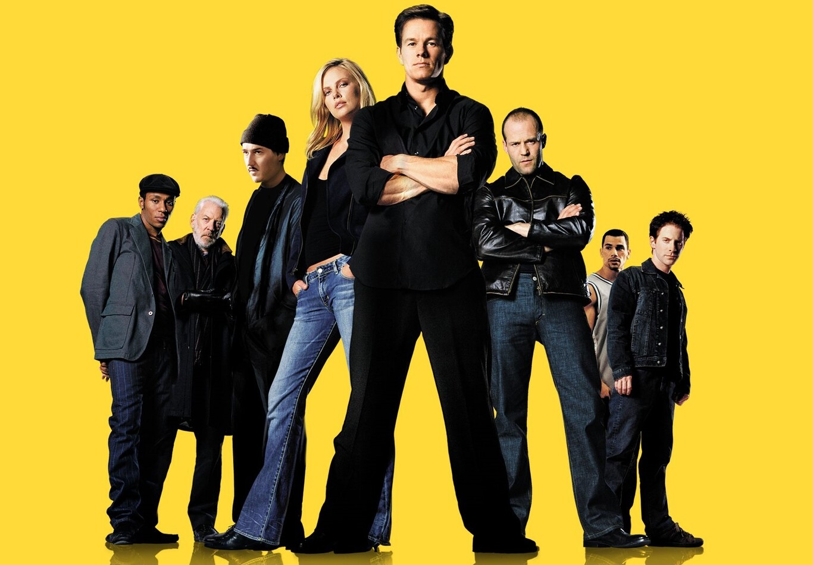

Llistat d'enllços interesants:
Neal Purvis i Robert Wade van escriure un esborrany d'un remake de la comèdia de crim britànic de 1969 The Italian Job que va ser rebutjada per la Paramount. subsequently5. L'equip de guionistes Donna i Wayne Powers van ser posteriorment encarregats d'escriure un remake. El duo va veure la pel·lícula original, que cap dels dos havia vist abans, només una vegada "perquè thethey sense volia obtenir un sentit del que era" en relació amb el seu to.56 they En el transcurs de dos anys i a través de 18 esborranys, they5 they van desenvolupar un guió que va ser descrit pel director F. Gary Gray com "inspirat per l'original." Gray6." Gris, Poders i Poders, i el productor executiu James Dyer va identificar les similituds més prominents com el trio de Mini Coopers utilitzat pels lladres, així com el trío titular que implicava el robatori de la bul·lació d'or. sequence788. Algunes seqüències de la pel·lícula van ser filmades i anticipades per Gray abans que comencés la producció.99.
